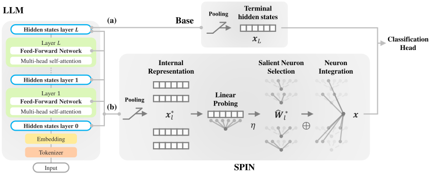
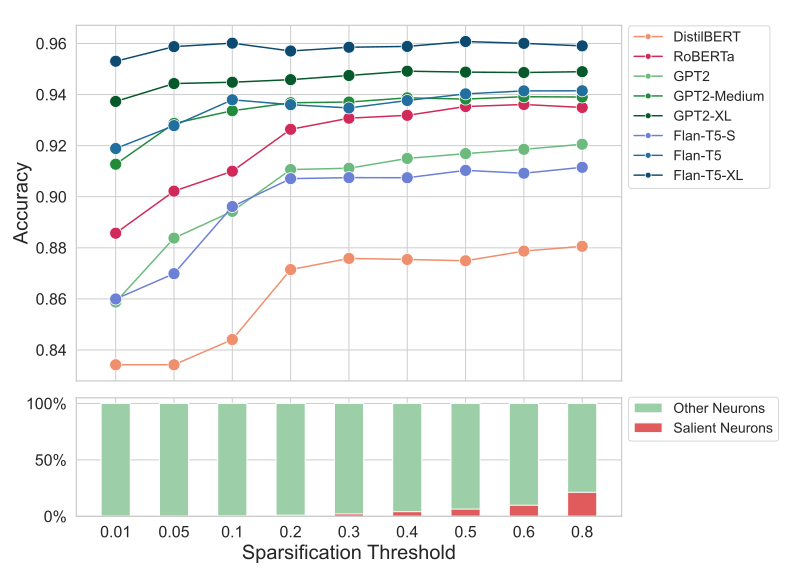
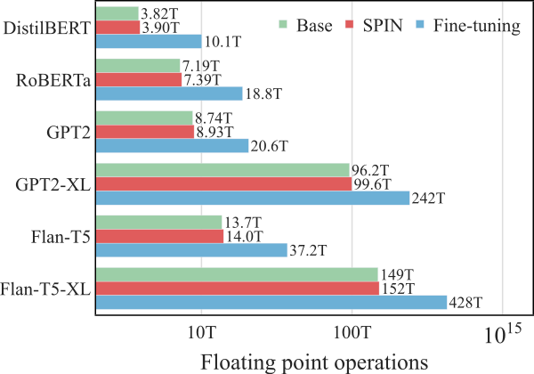
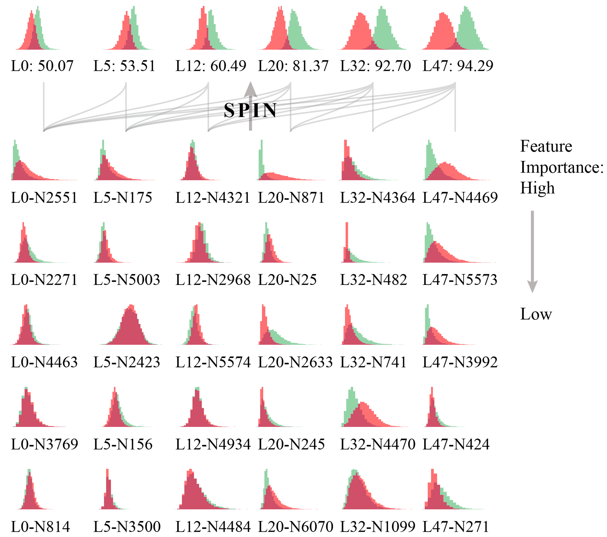
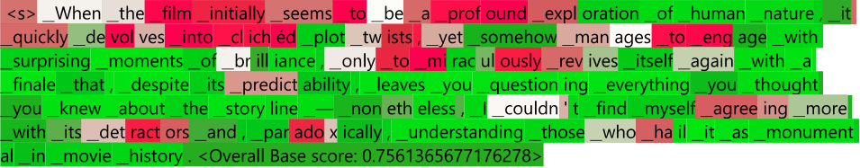
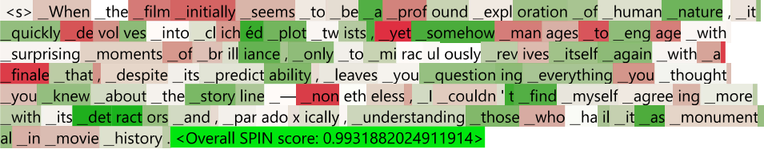

Introduction
Large language models now give the best results on many text classification tasks, from judging the sentiment of a movie review to detecting sexism in online posts. Prompting a model to answer directly is one way to use them for this, but training a classification head on the model remains the dominant approach, because it performs better on specific tasks. The usual recipe runs the text through the model, takes the hidden state of its final layer, and trains a small head to map that representation to a label. The backbone may be a general pretrained model or one that has been fine-tuned for the task.
This recipe reads only the final layer. Everything the model computed on the way there, layer by layer, is left behind, and whatever those intermediate layers know about the text goes unused. Getting competitive accuracy out of the recipe often means fine-tuning the whole model for the task, which for a large model is expensive. And it treats the model as a black box: the head reports a label but says nothing about where in the network the evidence for that label came from.
There is good reason to think the intermediate layers are worth reading. Interpretability research has repeatedly found that the internal representations of neural networks capture the features that matter for a task. Radford et al. (2017) found individual neurons in an LSTM language model whose activations classify sentiment, and Gurnee and Tegmark (2023) showed that LLaMA2's internal representations support classification about space and time. Wang et al. (2022) went a step further and used the top-ranked task-specific neurons of RoBERTa as a classifier, reaching accuracy competitive with fine-tuning. These results had not yet been turned into a general classification method that works across model families.
We introduce SPIN, a model-agnostic framework that sparsifies and integrates internal neurons for text classification. SPIN leaves the model's weights untouched and reads its internal representations at every layer, either the hidden states or the activations inside the feed-forward networks, as features for the classification head. Neurons do not contribute equally to a given task, and the irrelevant ones add noise that dilutes the features that matter, so the raw representations are filtered before use. SPIN first sparsifies: for each layer, it trains a linear probe on the task and keeps the neurons the probe relies on. Then it integrates: the selected neurons from all layers are concatenated into one feature vector, so the classifier sees the model's lower-level, simpler features alongside its higher-level, more abstract ones.
Because SPIN needs only access to a model's internal representations, it can be attached to any transformer whose weights are available, pretrained or already fine-tuned, as a plug-in component. In our experiments it outperforms the final-layer classifier on every backbone and dataset we tested, and on pretrained models it comes within reach of fully fine-tuned state of the art while training nothing but the probes and the head. Training needs only forward passes with frozen weights, followed by fitting small linear models. At inference, SPIN can stop partway through the network; using 60% of the layers preserves up to 99% of the accuracy of using all of them. And because the probes are linear, SPIN shows which neurons, in which layers, carry the decision.
Sparsifying and integrating internal neurons
The internal representations from all layers of a language model can be obtained in a single forward pass. SPIN uses one of two kinds: hidden states, the output of each transformer layer, or activations, the intermediate values inside each layer's feed-forward network. Both are standard objects of study in interpretability research, and we treat the choice between them as a hyperparameter. Sentences have different lengths, so we pool each layer's representation over tokens, taking the first token, the last token, the maximum, or the average, to obtain one fixed-size vector per layer.

Selecting neurons within each layer
The first step asks, for each layer separately, which neurons carry information about the task.
A linear probe answers this. We train a logistic regression on a layer's frozen, pooled representations to predict the task label from the training set. Linear models suit this job for two reasons. The linear representation hypothesis holds that features in neural networks are represented linearly, so a linear model is expressive enough to find them. And a linear model is too simple to learn new task-specific structure on top of the representations, so it measures what is already there.
We use L1-regularized logistic regression, also called Lasso. The L1 penalty pushes many weights to zero, and the magnitude of the remaining weights indicates how much each neuron contributes to the probe's prediction. Within each layer, we normalize these magnitudes so they sum to one, sort them in descending order, and keep the smallest set whose cumulative weight reaches a sparsification threshold. A threshold of 0.4, for example, keeps the neurons that together account for 40% of the probe's total weight. We record the positions of these neurons for each layer.

Raising the threshold admits more neurons, each less salient than the last. In Figure 2, accuracy rises quickly up to a threshold of about 0.2 and changes little beyond it, which means a small set of neurons already carries most of the usable signal. The lower panel shows how small that set is. At a threshold of 0.4, SPIN keeps about 3% of the neurons in each layer, and even at 0.8 it keeps less than a quarter, because the Lasso penalty has already pushed most probe weights to zero.
Combining signals across layers
Language models build up their representation of a text layer by layer, from simpler features in the lower layers to more abstract ones higher up. The final layer condenses this into a single output. In doing so it may overlook or underuse specialized knowledge that sits in the intermediate layers.
The integration step concatenates the selected neurons' representations from every layer, or from every layer up to a chosen exit point, into one feature vector. We then train a linear classification head with a sigmoid output on it, the same kind of head the baseline trains on the final layer. Concatenation preserves each neuron's representation as it is, so the classifier can weigh signals from several depths, and we can later inspect what individual neurons contribute.
Why both steps matter
We checked each step on GPT2-XL and IMDb by removing it. Table 1 compares probe-based selection with random selection at a fixed budget of neurons per layer. With one neuron per layer, the neurons the probes pick give 93.71% accuracy, and randomly picked neurons give 69.90%. The gap narrows as the budget grows but is still open at 100 neurons per layer.
Table 2 compares the integrated classifier with the best single layer at each exit depth. Integration wins at every depth. The best single layer peaks at 94.12% with 32 layers and drops to 92.41% at the full 48, while the integrated classifier keeps improving to 94.92%.
| Neurons per layer | Random | Probe (SPIN) |
|---|---|---|
| 1 | 69.90 | 93.71 |
| 5 | 74.78 | 94.24 |
| 10 | 82.75 | 94.42 |
| 50 | 87.01 | 94.47 |
| 100 | 90.98 | 94.63 |
Table 1. IMDb accuracy of GPT2-XL with neurons selected by the probes or at random.
| Layers used | Best single layer | Integrated (SPIN) |
|---|---|---|
| 8 | 87.17 | 88.34 |
| 16 | 89.84 | 92.09 |
| 24 | 92.72 | 94.70 |
| 32 | 94.12 | 94.91 |
| 48 | 92.41 | 94.92 |
Table 2. IMDb accuracy of GPT2-XL using the best individual layer or the integrated neurons up to each depth.
What we find
Classification across model families
We evaluate on three benchmarks. IMDb is a dataset of movie reviews labeled positive or negative. SST-2, part of the GLUE benchmark, labels sentences from the Stanford Sentiment Treebank the same way. EDOS, from SemEval-2023 Task 10, asks whether an online post is sexist; we use its Task A labels. Following each benchmark's official metric, IMDb and SST-2 report accuracy and EDOS reports macro-F1.
The backbones cover the three mainstream transformer architectures: encoder models (DistilBERT and RoBERTa), decoder models (GPT2, GPT2-M and GPT2-XL), and encoder-decoder models (Flan-T5-S, Flan-T5 and Flan-T5-XL). The baseline trains a classification head on the frozen final-layer representation that each architecture conventionally uses: the [CLS] token for encoders, the last token for decoders, and the pooled output of the final encoder layer for encoder-decoder models. The baseline head, like SPIN's, is trained with the datasets' labels, so the comparison is between two supervised classifiers and leaves prompting methods aside. SPIN's hyperparameters, the regularization coefficient, the sparsification threshold, the pooling strategy and the choice between hidden states and activations, are chosen by grid search; the search space and the settings used are listed in the paper's appendix.
Each version of SPIN outperforms its corresponding baseline across all three benchmarks (Table 3). For Flan-T5-S on EDOS, macro-F1 rises from 59.62 to 74.51, a relative improvement of about 25%. SPIN also improves models whose baseline performance is already high: GPT2-XL's IMDb accuracy increases from 91.86% to 94.92%.
| Backbone | IMDb | SST-2 | EDOS | |||
|---|---|---|---|---|---|---|
| Base | SPIN | Base | SPIN | Base | SPIN | |
| DistilBERT | 86.95 | 89.78 | 81.88 | 83.94 | 65.09 | 75.79 |
| RoBERTa | 89.67 | 93.61 | 84.06 | 90.59 | 68.81 | 73.50 |
| GPT2 | 87.72 | 91.94 | 85.89 | 87.73 | 68.57 | 76.08 |
| GPT2-M | 88.59 | 93.92 | 86.12 | 90.25 | 71.17 | 75.74 |
| GPT2-XL | 91.86 | 94.92 | 90.02 | 93.23 | 72.56 | 76.79 |
| Flan-T5-S | 84.08 | 91.15 | 77.17 | 88.99 | 59.62 | 74.51 |
| Flan-T5 | 90.01 | 94.14 | 78.26 | 92.32 | 66.64 | 78.04 |
| Flan-T5-XL | 90.50 | 96.12 | 84.75 | 95.64 | 70.08 | 81.48 |
| Fine-tuned state of the art | 96.21 | 97.50 | 82.35 | |||
The last row of Table 3 puts these numbers next to fully fine-tuned models. SPIN on Flan-T5-XL reaches 96.12% on IMDb, 99.9% of fine-tuned XLNet's 96.21%, with the backbone frozen. On SST-2 the gap to fine-tuned T5-11B is under two points, and on EDOS SPIN reaches 81.48 macro-F1 against 82.35 for fine-tuned DeBERTa-v3-base.
Larger models and more classes
Two further experiments check that the approach is not tied to the main setting. On LLaMA2-7B and LLaMA2-13B, SPIN again improves IMDb accuracy over the final-layer classifier (Table 4). At this scale, fine-tuning for a sentence classification task with limited training data is expensive, and SPIN adapts the model with forward passes alone.
The main experiments are binary. A multiclass task can be split into one binary classifier per class, or the classification head can be replaced with one that handles several classes directly. We took the second route on AG News, a news topic classification dataset, using multinomial logistic regression as both the probe and the head. SPIN improves all three backbones we tested.
| Backbone | Dataset | Base | SPIN |
|---|---|---|---|
| LLaMA2-7B | IMDb | 94.04 | 95.76 |
| LLaMA2-13B | IMDb | 94.55 | 96.06 |
| DistilBERT | AG News | 91.18 | 92.21 |
| GPT2 | AG News | 90.64 | 92.19 |
| Flan-T5-S | AG News | 85.68 | 91.89 |
SPIN on fine-tuned models
SPIN needs only the model's internal representations, so it can also be applied to a model that has already been fine-tuned for the task. The checkpoints behind the state-of-the-art results above are not public, so we used publicly available fine-tuned DistilBERT, RoBERTa and GPT2 checkpoints. SPIN improves on the fine-tuned model's own classifier in every available comparison (Table 5); no GPT2 fine-tuned on EDOS was available.
| Backbone | IMDb | SST-2 | EDOS | |||
|---|---|---|---|---|---|---|
| Base | SPIN | Base | SPIN | Base | SPIN | |
| DistilBERT | 92.80 | 92.88 | 91.05 | 91.19 | 78.74 | 81.12 |
| RoBERTa | 94.67 | 95.68 | 94.03 | 94.38 | 80.48 | 80.88 |
| GPT2 | 94.06 | 94.50 | 91.51 | 92.32 | n/a | n/a |
The gains here are small, often under one point, because the fine-tuned model has already adapted its final layer to the task. To check that they are real, we ran five-fold cross-validation on IMDb and a one-sample t-test against the baseline's score. All three improvements are significant at p < 0.05.
Parameter-efficient fine-tuning methods such as LoRA and adapters add small trainable modules inside the network but do not block access to its hidden states and activations, so SPIN works on top of them without changes. On a LoRA-fine-tuned DistilBERT for IMDb, SPIN raises accuracy from 87.71% to 90.58%, about the same relative gain as on the pretrained model.
Training and inference costs
SPIN never backpropagates through the language model. Training consists of forward passes with frozen weights to record the representations, then fitting the linear probes and the classification head on those recordings. The trainable parameters are the probes and the head, at least three orders of magnitude fewer than the backbone: for GPT2-XL, about one million against 1.6 billion.

Figure 3 compares estimated training compute. SPIN costs only slightly more than training a final-layer classifier, since both are dominated by the forward passes, and less than half of a single epoch of full fine-tuning. Parameter-efficient fine-tuning also trains few parameters, but its gradients still flow through the entire network, so its wall-clock cost is higher than the operation count suggests. SPIN trains its probes independently from the model on recorded representations, which can run on modest hardware and in parallel.
At inference time, SPIN can make a prediction before the forward pass finishes. We select and integrate neurons only from the layers up to an exit point and train the classification head on those. Table 6 reports IMDb accuracy when SPIN uses the first 20% to 100% of each model's layers.
| Backbone | 20% | 40% | 60% | 80% | 100% |
|---|---|---|---|---|---|
| DistilBERT | 85.20 | 84.73 | 87.45 | 88.67 | 89.78 |
| RoBERTa | 87.06 | 89.72 | 93.13 | 93.50 | 93.61 |
| GPT2 | 87.51 | 89.00 | 91.10 | 91.88 | 91.94 |
| GPT2-M | 88.52 | 91.36 | 93.36 | 93.92 | 93.92 |
| GPT2-XL | 89.66 | 93.15 | 94.73 | 94.92 | 94.92 |
| Flan-T5-S | 82.88 | 87.74 | 90.93 | 91.32 | 91.32 |
| Flan-T5 | 84.58 | 92.55 | 94.14 | 94.14 | 94.14 |
| Flan-T5-XL | 89.21 | 95.28 | 96.12 | 96.12 | 96.12 |
Reading across a row shows how much accuracy a model gives up by stopping early. GPT2-XL reaches 94.73% with 60% of its layers, against 94.92% with all of them. Flan-T5 and Flan-T5-XL reach their full-depth accuracy at 60% of layers, and GPT2-M and Flan-T5-S at 80%. In these cases SPIN keeps 99% or more of its full-depth accuracy and skips the remaining part of the forward pass. The small encoder DistilBERT benefits least: it loses more than two points at 60%, so the useful exit depth depends on the backbone.
What the selected neurons reveal
Because the probes are linear and the integration step is a concatenation, SPIN can be inspected at two levels: the individual neurons the probes select, and the classifier built from them.

Figure 4 shows both levels for GPT2-XL on IMDb sentiment. Each small panel is the distribution of one output over negative reviews (red) and positive reviews (green); the further apart the two colors, the better that output separates the classes. The top row is the integrated SPIN classifier built from neurons up to the labeled layer, with its accuracy. At layer 0 the two distributions sit on top of each other and accuracy is 50.07%, no better than chance. By layer 20 they have begun to separate (81.37%), and by layer 47 they are well apart (94.29%). The rows below show the most salient individual neurons at each of those layers, ordered from highest importance at the top. Individual neurons in the early layers barely distinguish the classes. Neurons in later layers do, though none alone separates them as cleanly as the integrated classifier above it. The curved lines mark that each layer's selected neurons feed every integrated classifier at that depth and above.
A classifier trained on pooled sentence representations can also be applied token by token, by skipping the pooling step and reading each token's representation directly. Figure 5 shows this for one IMDb review with GPT2-XL and max pooling, for the baseline and for SPIN. Each token is shaded by the predicted sentiment at that position, red for negative and green for positive. GPT2-XL is a decoder, so each position's representation covers the text read so far, and the shading tracks the review's sentiment as it unfolds.


(a) Baseline

(b) SPINBoth classifiers flip several times across "couldn't find myself agreeing more with", as the running sentiment should. At turns such as "yet somehow", "despite" and "nonetheless", SPIN's pattern is clearer than the baseline's, and its overall score for the review is 0.99 against 0.76 for the baseline. For encoder models the same transfer has an extra benefit. Baseline classifiers on encoders read the [CLS] token, which has no counterpart at other positions, so token-wise predictions need repeated passes over sliding windows. SPIN trains on representations from all tokens, so it transfers directly. Token-wise predictions can be explored in our interactive demo.
Discussion
SPIN shows that intermediate representations are useful features for text classification with a frozen language model. Selecting neurons within each layer and integrating them across layers improves on final-layer classifiers for every backbone and dataset we tested. The same features approach fine-tuned models at a fraction of the training cost and allow early exit at inference.
The idea connects two lines of work. Interpretability research has located task-relevant neurons in language models, from the linear semantic directions of word2vec to expert neurons in transformers, and has used individual neurons to classify text. Dynamic neural networks, including mixture-of-experts models and early-exit methods, exploit sparsity and skip computation at inference. SPIN draws on both while staying outside the model. It selects individual feed-forward neurons without adding routing inside the network, and it works as a module on top of any transformer whose weights are available.
The approach requires access to the model's internal representations, so it cannot be used with a text-only API or built on proprietary checkpoints whose weights are not released. We also use a linear classification head with a sigmoid output. A more sophisticated head could improve accuracy; we kept the simple one to match prior work and to keep the classifier interpretable. Our full paper includes the mathematical formulation, the hyperparameter settings, the parameter and compute estimates, and the remaining experiments.